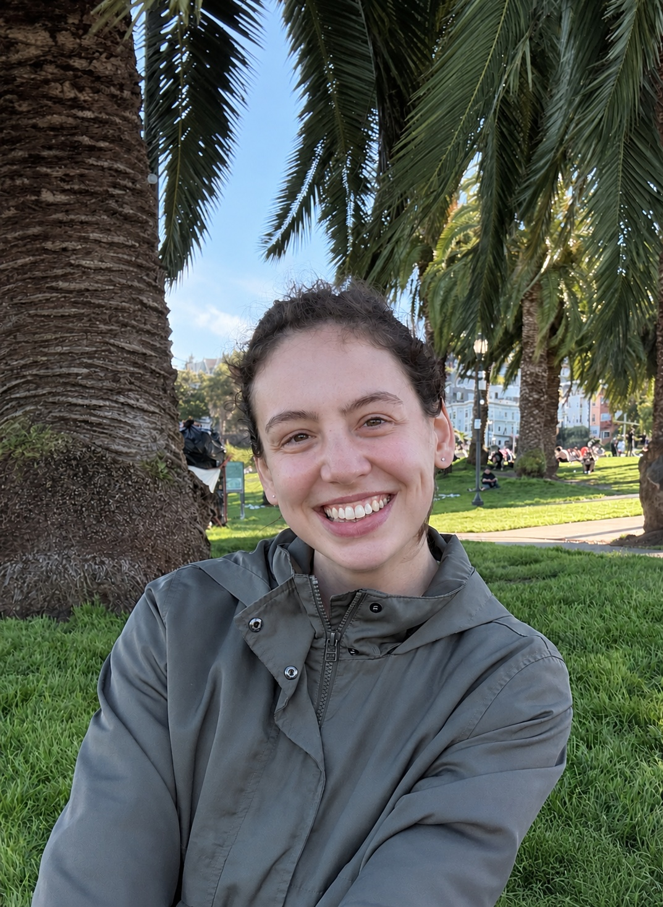

Welcome
I am Madelaine O'Reilly-Brown, a sixth-year PhD candidate in the Department of Linguistics at Stanford University.
I am a theoretical syntactician and fieldworker, with a primary interest in the interfaces between syntactic structure and meaning. The central questions motivating my current research are (1) what are the properties of the mapping between grammatical structure and meaning, and (2) given that different theoretical commitments have different consequences for how we think about this mapping, how do we discriminate between options, and can we do so on the basis of empirical evidence?
My dissertation and related work investigates these questions through a study of the pronominal and clausal inventories of Uyghur, a Turkic language spoken primarily in Western China. In it, I explore the consequences of a (de)compositional approach to the pronominal and clausal spines for deriving interpretive phenomena including obligatory control, impersonal readings of null pronouns, and long-distance reflexive binding.
In addition, I have a secondary line of work on syntactic variation and change. In a joint project with Arto Anttila and Brandon Papineau, we experimentally investigate contemporary variation in Finnish case as a lens through which to understand ongoing diachronic change.
I am advised primarily by Vera Gribanova and Boris Harizanov.
Email: morbrown@stanford.edu